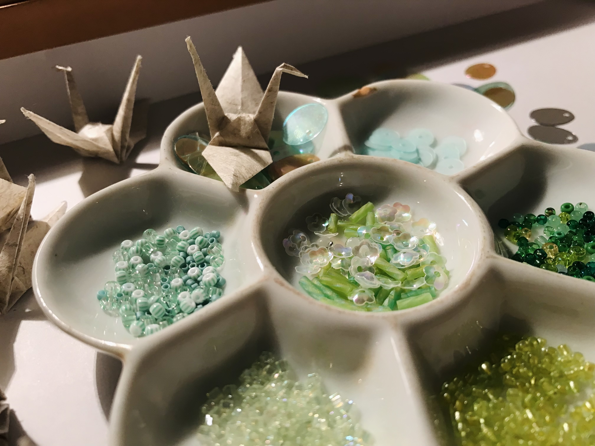
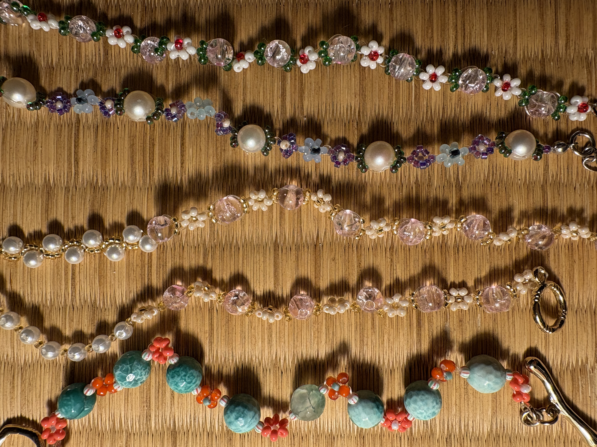
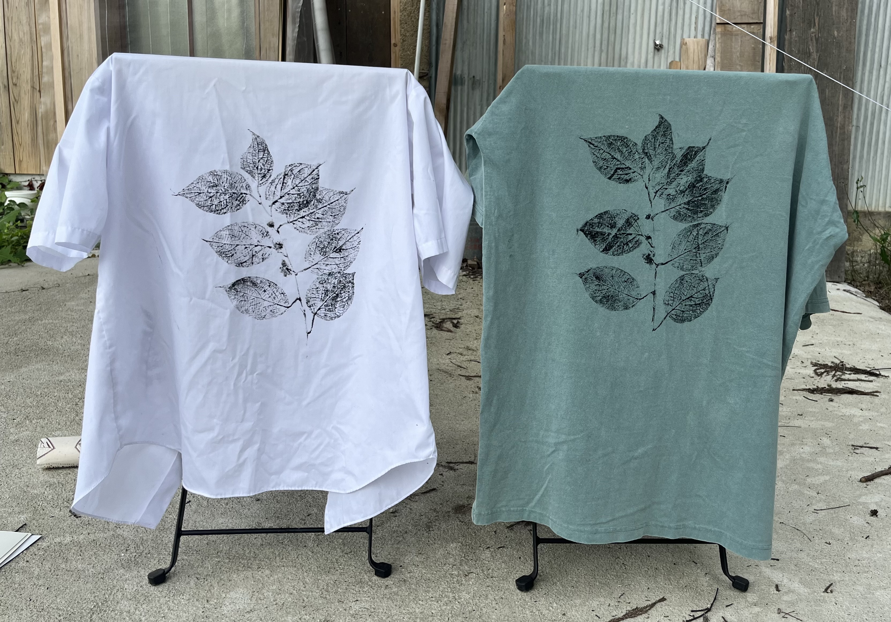

コンテンツへスキップ
おはな研究所
作品
研究所について
展示・メディア
note
EN
作品
季節と遊ぶように、素材と向き合い、形を生み出しています
一覧
すべて
道東
小院瀬見
衣
空間
詳細フィルタ
春
夏
秋
冬
りゅう
みー
Installation / Kushiro EGG
鹿おどし
Light & Sound / Teshikaga
お花の池
Community Art / Teshikaga
曼荼羅
Wear / Kushiro
おは奈座布団 釧路
Suncatcher / Koinzemi

柳のサンキャッチャー
Accessory / Koinzemi

ビーズアクセサリー（花）
Object / Koinzemi
真菰の昼寝グッズ
Wear / Koinzemi → Kushiro
制服シャツ（草花拓＋藍）
Wear / Koinzemi
制服シャツ（カラムシ＋拓）
Fabric / Ramie
ラミー生地（アケビ）
Wear / Koinzemi
貫頭衣／クロップドマント
Wear / Koinzemi
茶碗蒸しパンツ
Nature Print / Koinzemi

草花拓
Plant Dye / Koinzemi
カラムシ染
Lighting / Koinzemi
和紙の灯り
Mini / Koinzemi
カラムシ拓シャツ
Mini / Koinzemi
スタンプ生成アプリ
技法・プロジェクト
作品を支える手法
草花拓
布に季節の形を転写する技法
草木染
植物由来の色を布に宿す総覧（事例あり）